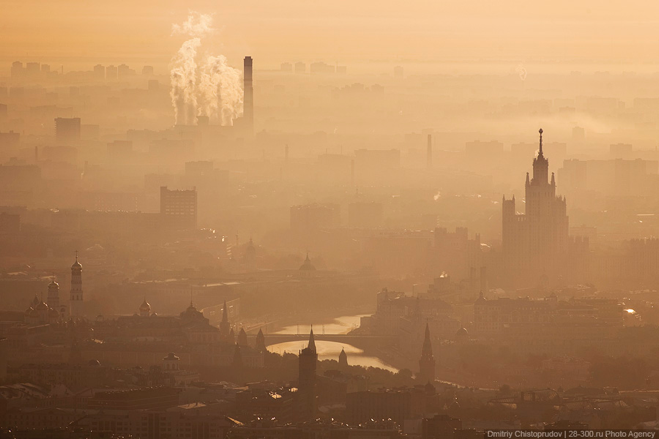

23 сентября
Дискуссии о кризисном состоянии российской науки ведутся уже более двадцати лет. Проводятся мониторинги, выдвигаются проекты. В октябре 2009 г. произошло событие, определенным образом повлиявшее на сложившуюся ситуацию - президенту России Д. А. Медведеву было направлено открытое письмо бывших российских граждан, а ныне - ведущих американских и европейских ученых. В письме содержалась не только острая критика российской научной системы, но также и конкретные предложения по реформированию с участием самих представителей диаспоры. Это документ мог остаться без ответа, однако появление письма по времени совпало с публикацией программных выступлений президента о модернизации страны и необходимости создания инновационной экономики. Ответом главы государства ученым стал проект реформ, к участию в разработке и воплощении которого были привлечены некоторые авторы письма, а также - ведущие российские ученые и эксперты-науковеды. До настоящего времени продолжается разработка реформ и широкая общественная дискуссия о перспективах реформирования, об эффективности РАН, о возможностях перенесения западных моделей и о том, какую именно модель модернизации следует выбрать для России. И именно в данной ситуации — в ситуации острой потребности в экспертном знании оказалось, что традиционные методы, используемые для исследования российской науки, недостаточны.
Действительно, в период с 1990-х гг. до настоящего времени было опубликовано немало научных и публицистических работ, посвященных кризисному состоянию естественно-научной сферы. Как правило, исследования имеют схожий, уже ставший стандартным, дизайн: анализируется статистика (уровень финансирования, средний возраст, динамика миграции сотрудников и т.д.), либо — проводятся опросы научных сотрудников. Несмотря на неоспоримую ценность статистических данных и то, что опрос несомненно обогащает данные официальной статистики, часто в подобных исследованиях случаются несоответствия. К примеру, те отрасли, куда, согласно официальным данным, направлено значительное финансирование, судя по тем же «сухим цифрам», не отвечают заданным планкам результативности. Интервьюирование ученых помогает понять некоторые особенности сферы, которые не могут быть описаны в количественных показателях, однако в подобных исследованиях часто воспроизводятся стереотипические представления инсайдеров (к примеру, повышение финансирования часто объявляется информантами главной мерой для улучшения ситуации, однако как показала практика последних лет, это мнение ошибочно).